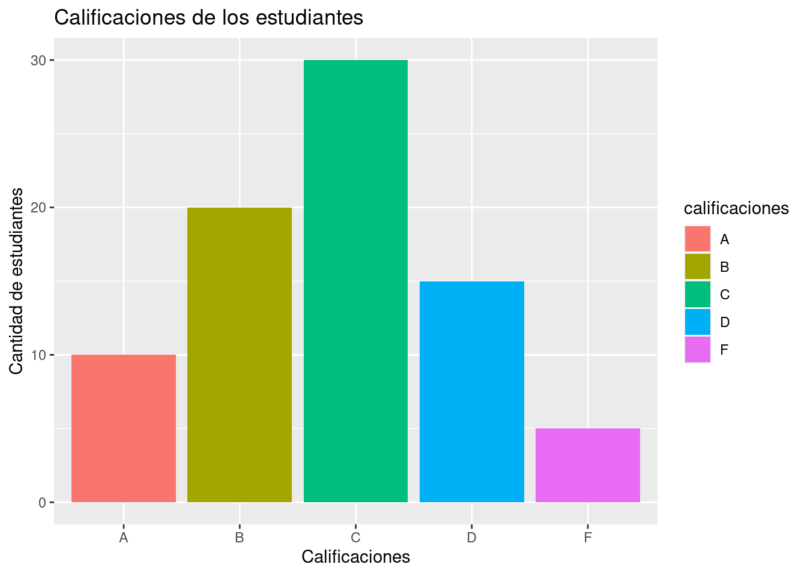
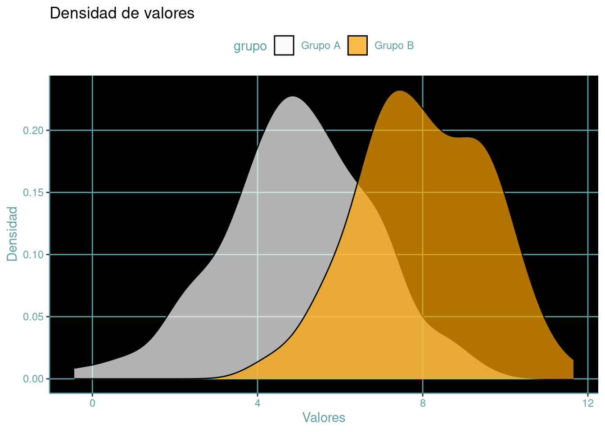
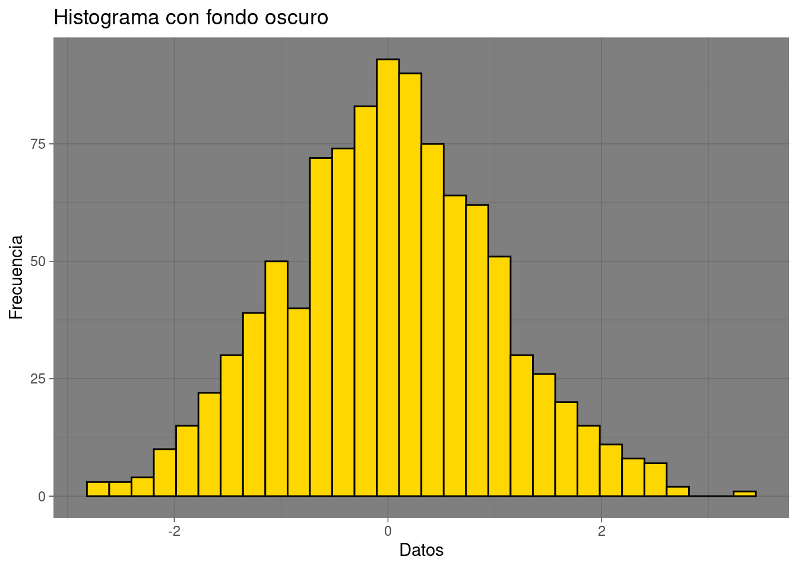

Las Tecnologías de la Información y la Comunicación (TIC) son recursos, dispositivos, programas, aplicaciones o equipos tecnológicos utilizados para recopilar, almacenar, procesar, transmitir y compartir información de manera digital. Estas herramientas están diseñadas para facilitar la comunicación, el acceso a la información, la gestión de datos y la realización de tareas en entornos digitales.
Las TIC abarcan una amplia gama de herramientas, que incluyen:
Hardware: Dispositivos físicos como computadoras, servidores, dispositivos móviles, routers, impresoras, entre otros, utilizados para procesar y almacenar datos.
Software: Programas, aplicaciones o sistemas operativos que permiten realizar diversas tareas, desde el procesamiento de texto y la creación de hojas de cálculo hasta el diseño gráfico, la gestión de bases de datos, la seguridad informática y mucho más.
Redes y Comunicaciones: Infraestructuras y tecnologías que facilitan la conectividad y la transmisión de datos, como Internet, redes locales (LAN), redes inalámbricas (Wi-Fi), protocolos de comunicación, entre otros.
Servicios en la Nube: Plataformas que permiten almacenar, gestionar y acceder a datos y aplicaciones a través de internet, como almacenamiento en la nube, servicios de correo electrónico, software como servicio (SaaS), entre otros.
Tecnologías Emergentes: Herramientas innovadoras como inteligencia artificial (IA), realidad aumentada (RA), Internet de las cosas (IoT), blockchain, que están transformando la forma en que interactuamos con la información y el entorno digital.
Importancia de las TIC en el Desarrollo de Software
Las Tecnologías de la Información y la Comunicación (TIC) juegan un rol fundamental en la creación de programas informáticos, son un pilar clave en todas las etapas del desarrollo del software.
Facilitan la comunicación y el trabajo colaborativo de manera instantánea entre equipos de desarroladores que se encuentran en diferentes puntos geogŕaficos. Las aplicaciones de mensajería, videoconferencia, así como las plataformas colaborativas en la nube facilitan la interacción entre desarrolladores, diseñadores, analistas y clientes involucrados en los proyectos.
Estas herramientas fomentan la eficiencia, la calidad y la innovación durante el proceso creativo, son parte del éxito para construir software adaptable a las demandas variables del mercado y a las necesidades de los usuraios finales.
Los entornos de desarrollo integrado (IDE) son herramientas que optimizan el tiempo y los recursos de un equipo de trabajo, además, agilizan el proceso de programación. Los IDE tienen incorporados complementos visuales que hacen la programación de cualquier lenguaje, una tarea más placentera. Algunos de los más usados son RStudio, Visual Studio Code y Spyder, pero no son las únicas herramientas que facilitan la codificación, también se ofrecen soluciones para la integración contínua y el despliegue contínuo que posibilita la implementación de cambios de manera constante, como Jenkins, AWS CodePipeline, Azure Pipelines, todo esto ocurre bajo un servidor de versionado como lo es Git.
La documentación del software es un elemento crítico en el despliegue de aplicaciones y sistemas informáticos. Consiste en la creación, actualización y organización de diversos tipos de documentos que describen el diseño, funcionamiento, implementación, mantenimiento y uso del software. Esta documentación es esencial para los diferentes roles dentro y fuera del equipo. Los procesadores de texto (Microsoft Word, Google Docs, LibreOffice Writer, Apple Pages, etc), se convierten en elementos imprescindibles para ejecutar esta tarea.
Dentro de las TIC, se encuentran herramientas específicas para la gestión de proyectos de software, como sistemas de seguimiento de problemas, control de versiones, gestión ágil (Scrum, Kanban) y software de planificación; las cuales permiten una administración eficiente de tareas, plazos y recursos. Algunos de estos software incluyen Trello, Jira, etc.
Innumerables son las herramientas TIC de las cuales disponemos hoy en día que facilitan el trabajo de los programadores y de las partes interesadas en el software como producto, pero las telecomunicaciones serían impracticables sin los dispositivos electrónicos que las llevan a cabo, todos ellos, se podrían ver como pequeñas computadoras que procesan los diferentes estados de la energía eléctrica para convertirla en información (números, imágenes, letras, videos, etc), algunos de estos dispositivos son las antenas que se utilizan para transmitir y recibir señales inalámbricas, routers los cuales facilitan la transferencia de datos, modems que permiten la conexión a internet, entre otros como las computadoras personales, dispositivos de audio y video. Esta sinergia entre hardware y software (sistemas operativos, programas, aplicaciones) hacen posible el mundo digital sobre el cual navegamos a diario.
Sistemas de información
Un sistema de información es un conjunto de elementos que interactúan entre sí para recopilar, procesar, almacenar y distribuir información con el fin de apoyar la toma de decisiones, la coordinación y el control dentro de una organización. Este sistema puede ser manual o automatizado, y se utiliza para capturar datos e información, procesarlos y convertirlos en conocimiento útil para la organización.
Un sistema de información se compone de varios componentes, incluyendo hardware, software, bases de datos, redes, procedimientos y personas. El hardware se refiere a los dispositivos físicos, como computadoras, servidores, impresoras y dispositivos móviles, que se utilizan para procesar y almacenar datos. El software incluye las aplicaciones informáticas y los sistemas operativos que se ejecutan en el hardware. Las bases de datos son estructuras de almacenamiento de datos que permiten la gestión y el acceso a la información. Las redes de comunicación permiten la transferencia de datos y la conectividad entre los diferentes componentes del sistema de información.
Los procedimientos son las reglas y normas que se siguen para gestionar y utilizar el sistema de información de manera efectiva y eficiente. Por último, las personas son los usuarios finales que utilizan el sistema de información para recopilar, procesar y analizar información con el fin de tomar decisiones informadas y mejorar el rendimiento organizacional.
Los componentes de un sistema de información pueden variar según el tipo de sistema y la organización que lo utilice. Sin embargo, en general, un sistema de información está compuesto por los siguientes componentes:
Hardware: se refiere a los componentes físicos del sistema, como computadoras, servidores, dispositivos de almacenamiento, impresoras y dispositivos móviles.
Software: incluye los programas y aplicaciones que se utilizan para procesar y gestionar la información en el sistema, como sistemas operativos, software de bases de datos, aplicaciones de productividad y software de seguridad.
Datos: son la información que se recopila y se almacena en el sistema de información, como registros de clientes, transacciones financieras, datos de inventario, entre otros.
Procedimientos: son las reglas y normas que se siguen para utilizar el sistema de información de manera efectiva y eficiente. Incluyen los procedimientos de seguridad, de respaldo de datos y de mantenimiento.
Personas: son los usuarios finales que utilizan el sistema de información para recopilar, procesar y analizar la información para tomar decisiones informadas. También incluyen a los administradores del sistema y al personal de soporte técnico.
Redes: son los medios de comunicación que permiten la transferencia de datos entre los diferentes componentes del sistema de información, como la red local (LAN), la red de área amplia (WAN) y la nube.
Bases de datos
Una base de datos es un conjunto organizado de información estructurada y almacenada en un sistema informático para que pueda ser accedida, gestionada y actualizada de manera eficiente.
Las bases de datos suelen estar compuestas por tablas o archivos que contienen información relacionada, que se organiza de forma lógica y se almacena en el disco duro u otro medio de almacenamiento. Estos datos pueden incluir nombres, direcciones, números de teléfono, fechas, precios, descripciones, entre otros.
Las bases de datos son utilizadas en una amplia variedad de aplicaciones, desde el seguimiento de clientes y ventas en un negocio hasta el almacenamiento de información científica en una universidad. Al utilizar una base de datos, se puede acceder a la información de forma rápida y eficiente, y se puede gestionar y actualizar fácilmente. Además, las bases de datos pueden ser utilizadas para realizar análisis y generar informes y estadísticas útiles para la toma de decisiones.
Existen diferentes tipos de bases de datos que se utilizan en distintas aplicaciones y contextos. Algunos de los tipos de bases de datos más comunes son:
Bases de datos relacionales: son las más utilizadas en el mundo empresarial y consisten en tablas que se relacionan entre sí mediante claves primarias y foráneas. Se gestionan mediante lenguajes como SQL (Structured Query Language) y son muy eficientes para almacenar grandes cantidades de datos.
Bases de datos NoSQL: se caracterizan por no tener una estructura fija y no utilizan SQL como lenguaje de consulta. Son útiles para almacenar grandes cantidades de datos no estructurados o semiestructurados, como documentos o datos de sensores.
Bases de datos orientadas a objetos: están diseñadas para almacenar objetos y sus relaciones. Estas bases de datos se utilizan principalmente en aplicaciones de programación orientada a objetos y son eficientes para aplicaciones con complejidad en la estructura de datos.
Bases de datos espaciales: se utilizan para almacenar y gestionar información espacial y geográfica. Son útiles en aplicaciones como sistemas de información geográfica (GIS) y análisis de datos espaciales.
Cada tipo de base de datos tiene sus ventajas y desventajas, y se utiliza en distintos contextos dependiendo de las necesidades de la aplicación o proyecto.
Creación de documentos
La creación de documentos digitales es una tarea común en la era digital actual. Los documentos digitales son archivos que contienen información escrita, gráfica, multimedia o combinaciones de estos elementos.
Los documentos digitales pueden ser creados con diferentes herramientas de software, como procesadores de texto, hojas de cálculo, editores de imágenes y presentaciones.
Para crear un documento digital, es importante tener en cuenta el propósito del documento, el público objetivo y el contenido que se incluirá en el documento. Por ejemplo, si se está creando un informe empresarial, se debe tener en cuenta la estructura y el estilo adecuados para transmitir la información de manera clara y concisa. Además, es importante considerar la inclusión de elementos visuales para mejorar la comprensión del lector.
Una vez que se tiene una idea clara del propósito y el contenido del documento digital, se puede utilizar una herramienta de software adecuada para crear el documento. Las herramientas de software para la creación de documentos digitales suelen tener una amplia variedad de funciones que permiten la edición y formateo de texto, la inclusión de imágenes y gráficos, la creación de tablas y la generación de índices y referencias cruzadas. Es importante conocer las funciones y características de la herramienta de software elegida para maximizar su uso en la creación de documentos digitales efectivos y de alta calidad.
Existen diferentes herramientas de software que se pueden utilizar para crear documentos digitales, como Microsoft Word, PDF, LaTeX y HTML. Cada herramienta de software tiene sus propias ventajas y desventajas, y elegir la herramienta adecuada depende del propósito del documento y las necesidades del usuario.
Aquí hay diez procesadores de texto que se pueden utilizar para crear documentos digitales:
Microsoft Word: Es uno de los procesadores de texto más utilizados en todo el mundo, que viene con una amplia variedad de funciones y plantillas para la creación de diferentes tipos de documentos.
Google Docs: Es una aplicación basada en la nube que permite la creación de documentos en línea y la colaboración en tiempo real.
LibreOffice Writer: Es un procesador de texto de código abierto que es gratuito para descargar y usar. Es una alternativa de bajo costo a Microsoft Word.
Apple Pages: Es un procesador de texto que viene con el sistema operativo de Macintosh y se integra con otras aplicaciones de Apple.
WPS Office Writer: Es un procesador de texto gratuito que es muy similar a Microsoft Word en términos de interfaz y características.
AbiWord: Es un procesador de texto de código abierto que es liviano y fácil de usar.
Zoho Writer: Es una aplicación basada en la nube que permite la creación y edición de documentos en línea.
Apache OpenOffice Writer: Es un procesador de texto de código abierto que es una alternativa gratuita a Microsoft Word.
LaTeX: Es un sistema de composición de texto utilizado principalmente para la creación de documentos académicos y científicos.
Markdown: Es un lenguaje de marcado que se utiliza para crear documentos que pueden ser convertidos a diferentes formatos, como HTML o PDF.
Markdown
Quarto
LaTeX
R
Code
library(ggplot2)# Creamos un data frame con los datosdata <-data.frame(calificaciones =c("A", "B", "C", "D", "F"),cantidad =c(10, 20, 30, 15, 5))# Creamos el gráfico de barrasggplot(data, aes(x = calificaciones, y = cantidad, fill = calificaciones)) +geom_bar(stat ="identity") +labs(x ="Calificaciones", y ="Cantidad de estudiantes", title ="Calificaciones de los estudiantes")

Code
library(ggplot2)# Creamos un data frame con los datosdata <-data.frame(calificaciones =c("A", "B", "C", "D", "F"),cantidad =c(10, 20, 30, 15, 5))# Creamos el gráfico de barrasggplot(data, aes(x = calificaciones, y = cantidad, fill = calificaciones)) +geom_bar(stat ="identity", color ="black", width =0.6, alpha =0.8) +labs(x ="Calificaciones", y ="Cantidad de estudiantes", title ="Calificaciones de los estudiantes") +theme_minimal() +theme(plot.title =element_text(size =20, hjust =0.5),axis.title.x =element_text(size =16, color ="gray30"),axis.title.y =element_text(size =16, color ="gray30"),axis.text =element_text(size =14),legend.position ="none") +scale_fill_manual(values =c("#53c68c", "#a5d7a7", "#f9d5e5", "#f19cbb", "#c0392b"))
Code
library(ggplot2)# Crear data frame con los datosdf <-data.frame(tiempo =c(1, 2, 3, 4, 5),producto1 =c(20, 50, 30, 70, 90),producto2 =c(10, 40, 60, 80, 100))# Crear el gráfico con fondo negroggplot(df, aes(x = tiempo, y = producto1)) +geom_line(color ="green", size =1) +geom_line(aes(y = producto2), color ="yellow", size =1) +theme(panel.background =element_rect(fill ="black"),panel.grid.major =element_line(color ="red"),panel.grid.minor =element_blank(),axis.line =element_line(color ="red"),axis.text =element_text(color ="red"),axis.title =element_text(color ="red"),legend.text =element_text(color ="red"),legend.title =element_text(color ="red"),legend.background =element_rect(fill ="black", color =NA),legend.position =c(0.8, 0.2)) +labs(title ="Ventas de productos",subtitle ="Productos 1 y 2",x ="Tiempo",y ="Ventas")
Warning: Using `size` aesthetic for lines was deprecated in ggplot2 3.4.0.
ℹ Please use `linewidth` instead.
Code
library(ggplot2)# Crear data frame con los datosdf <-data.frame(grupo =rep(c("Grupo A", "Grupo B"), each =100),valores =c(rnorm(100, 5, 2), rnorm(100, 8, 1.5)))# Crear el gráfico con fondo negroggplot(df, aes(x = valores, fill = grupo)) +geom_density(alpha =0.7) +scale_fill_manual(values =c("white", "orange")) +theme(panel.background =element_rect(fill ="black"),panel.grid.major =element_line(color ="cadetblue"),panel.grid.minor =element_blank(),axis.line =element_line(color ="cadetblue"),axis.text =element_text(color ="cadetblue"),axis.title =element_text(color ="cadetblue"),legend.text =element_text(color ="cadetblue"),legend.title =element_text(color ="cadetblue"),legend.background =element_rect(fill ="white", color =NA),legend.position ="top") +labs(title ="Densidad de valores",x ="Valores",y ="Densidad")

Code
library(ggplot2)# Crear data frame con los datosset.seed(123)df <-data.frame(grupo =rep(c("Grupo 1", "Grupo 2"), each =50),variable =rep(c("Variable A", "Variable B"), each =25, times =2),valores =c(rnorm(25, 5, 2), rnorm(25, 8, 1.5), rnorm(25, 6, 1.2), rnorm(25, 7, 1.8)))# Crear el gráfico con fondo negroggplot(df, aes(x = variable, y = valores, fill = grupo)) +geom_boxplot() +scale_fill_manual(values =c("cyan", "green")) +theme(panel.background =element_rect(fill ="black"),panel.grid.major =element_line(color ="red"),panel.grid.minor =element_blank(),axis.line =element_line(color ="red"),axis.text =element_text(color ="red"),axis.title =element_text(color ="red"),legend.text =element_text(color ="red"),legend.title =element_text(color ="red"),legend.background =element_rect(fill ="black", color =NA),legend.position ="top") +facet_wrap(~ grupo, scales ="free") +labs(title ="Boxplot con tres variables",x ="",y ="Valores")
Code
library(ggplot2)# Generar datos aleatoriosset.seed(123)datos <-rnorm(1000)# Crear histograma con ggplot2ggplot(data =data.frame(datos = datos), aes(x = datos)) +geom_histogram(fill ="gold", color ="black") +theme_dark() +labs(title ="Histograma con fondo oscuro", x ="Datos", y ="Frecuencia")
`stat_bin()` using `bins = 30`. Pick better value with `binwidth`.

Code
library(ggplot2)# Generar datos aleatoriosset.seed(123)datos <-rnorm(1000)# Crear gráfico con densidad y histograma apiladosggplot(data =data.frame(datos = datos), aes(x = datos)) +geom_density(alpha =0.5, fill ="red") +geom_histogram(aes(y = ..density..), alpha =0.7, fill ="blue", bins =20, color ="black") +theme_dark() +labs(title ="Densidad y histograma apilados", x ="Datos")
Warning: The dot-dot notation (`..density..`) was deprecated in ggplot2 3.4.0.
ℹ Please use `after_stat(density)` instead.
Code
library(ggplot2)# Generar datos aleatoriosset.seed(123)datos <-rnorm(1000)# Crear gráfico con densidad y histograma apilados con fondo negroggplot(data =data.frame(datos = datos), aes(x = datos)) +geom_density(alpha =0.5, fill ="red") +geom_histogram(aes(y = ..density..), alpha =0.5, fill ="blue", bins =20, color ="green") +theme_dark() +theme(panel.background =element_rect(fill ="black")) +labs(title ="Densidad y histograma apilados con fondo negro", x ="Datos")